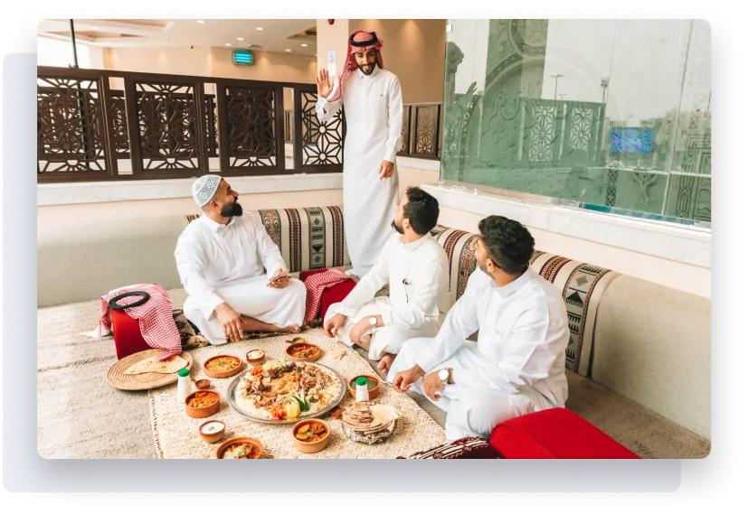

المخواة
المخواة من محافظات منطقة الباحة، وتشتهر بقربها من القرى التراثية والطبيعة الجبلية والأودية والمزارع، وتعد بوابة مهمة لعدد من المواقع السياحية في تهامة الباحة.
مقاهي المخواة

Valley Café
كوفي مميز بجلسات هادئة وأجواء جميلة في المخواة.
📍 الموقع
Palm Coffee
مقهى أنيق يقدم القهوة المختصة ومشروبات متنوعة.
📍 الموقع
Sunset Lounge
كوفي بإطلالة جميلة مناسب للجلسات المسائية.
📍 الموقعMakhwah Brew
أجواء مريحة وقهوة مناسبة للجلسات الطويلة.
📍 الموقعWadi Cup
كوفي بطابع هادئ ومكان مناسب للاسترخاء.
📍 الموقعOlive Café
جلسات أنيقة ومشروبات متنوعة.
📍 الموقعTerrace Coffee
إطلالة لطيفة وأجواء مميزة لمحبي القهوة.
📍 الموقعQuiet Bean
كوفي صغير بطابع مريح وهادئ.
📍 الموقعGolden Roast
قهوة مختصة مع جلسات داخلية جميلة.
📍 الموقعEvening Brew
أجواء مسائية جميلة ومشروبات متنوعة.
📍 الموقع
مطاعم المخواة

Maestro Pizza
بيتزا بعجينة طازجة.
📍 الموقع
مطعم المخواة الشعبي
أكلات شعبية محلية.
📍 الموقع
مطعم السراة
مطعم يقدم أطباق متنوعة.
📍 الموقع
Redan Restaurant
مطعم عربي معروف.
📍 الموقع
حدائق المخواة

قرية ذي عين التراثية
أشهر معالم المنطقة وتقع قرب المخواة.
📍 الموقع
جبل شدا الأسفل
موقع طبيعي معروف بتكويناته الصخرية وطبيعته الجبلية.
📍 الموقع
المنتزه العام بالمخواة
مكان مناسب للعائلات والجلسات الخارجية.
📍 الموقعممشى المخواة
ممشى جميل للرياضة والاسترخاء.
📍 الموقعحديقة المخواة العامة
حديقة مناسبة للتنزه والأجواء العائلية.
📍 الموقعمطل المخواة
إطلالة جميلة على الأودية والجبال المحيطة.
📍 الموقعالمنتزه الجبلي
طبيعة جميلة ومساحات مناسبة للجلسات.
📍 الموقعحديقة الوادي
أجواء هادئة مناسبة للمشي والتنزه.
📍 الموقعالمزارع المحيطة بذي عين
منطقة زراعية جميلة قرب القرية التاريخية.
📍 الموقعموقع شدا السياحي
موقع طبيعي رائع لعشاق الاستكشاف.
📍 الموقع
فعاليات المخواة

الجولات السياحية في ذي عين
جولات لاستكشاف القرية التاريخية والمزارع المحيطة.
📍 الموقع
الأسواق الشعبية
أجواء محلية ومنتجات تراثية.
📍 الموقع
الرحلات الجبلية
أنشطة خارجية وتجارب ممتعة لمحبي الطبيعة.
📍 الموقعالفعاليات العائلية
أنشطة مناسبة للعائلة والأطفال.
📍 الموقعالجولات التراثية
استكشاف القرى والمواقع التاريخية.
📍 الموقعالأنشطة الزراعية
تجربة المزارع والمنتجات المحلية.
📍 الموقعالتصوير الطبيعي
مواقع مميزة للتصوير والمناظر الطبيعية.
📍 الموقعالمهرجانات المحلية
فعاليات اجتماعية ومحلية متنوعة.
📍 الموقعالهايكنج الخفيف
جولات مشي لطيفة في الطبيعة.
📍 الموقعاستكشاف شدا
تجربة ممتعة لعشاق الجبال والمغامرة.
📍 الموقع